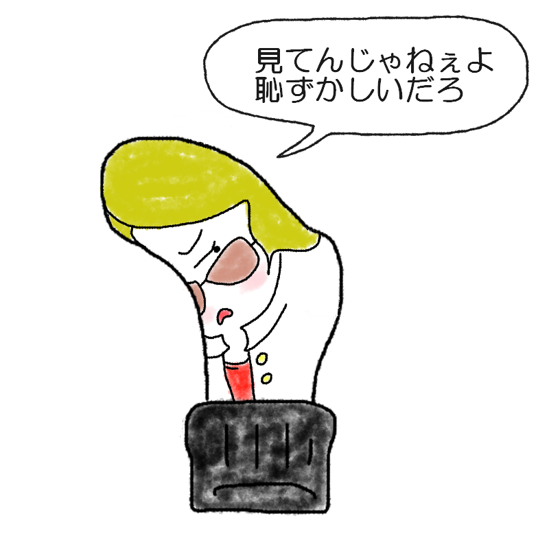

あなたの診断結果
？ ？ ？ （キャラクター名前募集中）足裏の小指にあく人
【外側のプレッシャーを食らいすぎて
すっかりやさぐれた、
足指界の人情派ヤンキー型】

「端っこだからって、舐めんなよ……！」
しょうがねぇな、荷物持ってやるよ！
あなたは、「喧嘩っ早くて不器用だけど、中身はとことん熱くて優しい一匹狼タイプ」です。
足指の最も外側に位置し、歩くたびに靴の壁から容赦ない圧迫と摩擦を受け続ける小指の裏。
過酷な環境で生き抜いてきたため、すっかり外見はやさぐれヤンキー風になってしまいました。
口を開けば「お前らな……」と喧嘩腰ですが、その実態は驚くほどの人情派。
お年寄りを見つければ率先して席を譲り、重そうな荷物を持ってる人がいれば「しょうがねぇな……」と言いながらサラッと持ってあげるタイプの、まっすぐで不器用な優しさを持っています。
誰よりも早く摩擦を食らって穴が空いてしまう不憫さはありますが、その熱いハートと反骨心は、誰も真似できない最高にカッコいい生き様です。
あなたの特徴
- 靴の端っこという過酷なポジションで、すべての摩擦を一身に引き受ける宿命
- 外見は喧嘩腰でやさぐれているが、中身は驚くほどピュアで熱い人情派
- お年寄りに席を譲り、重い荷物は「しょうがねぇな」と持ってあげるツンデレ気質
- 気づけば真っ先に穴が空いて散っていく、不器用で儚いアウトロー精神
最後にひとつ。
端っこで尖るしか生きる術を知らなかったとしても、その摩擦の数と優しさは本物だ。
どんなに靴の壁に押し潰されようとも、
その人情の穴は誰にも塞げない！ 輝け、やさぐれ小指の魂よ！
このキャラクターに名前をつける
思いついた名前を教えてね！
※このスタンプには日陰に消えたボツキャラが混ざっています
※この診断はただのお遊びです。
※靴下の穴が開く場所には個人差があります。